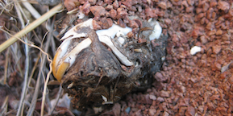
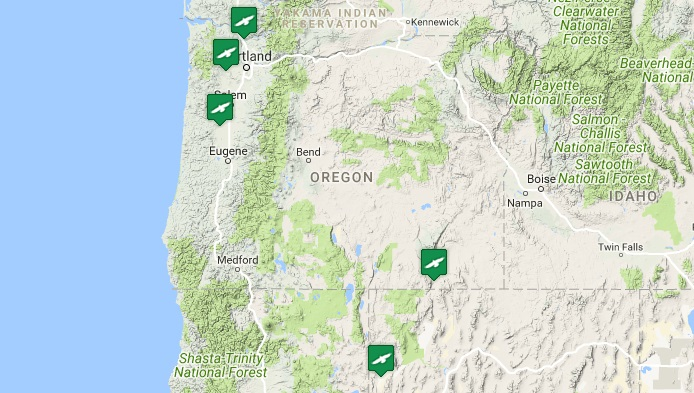

Pellet Map Project
Mapping small mammal distributions through their avian predators.

What can we learn from raptor pellets?
Avian predators such as owls, hawks, eagles, and falcons are major consumers of small mammals worldwide. Raptors produce pellets - regurgitated hairballs packed with the indigestable hard parts of their small mammal meals, such as bones, claws, and teeth. These pellets can build up under avian roosts, providing a unique and under-appreciated window into the ecology of small mammals. The goal of Pellet Map Project is to produce a high-resolution dataset of small mammal distributions as viewed through the lens of their avian predators throughout the Western US. By putting the dead to work, we aim to reconstruct a holistic view of the small mammal community as sampled by natural processes.

The Map
In creating this unique online pellet database, part of our goal is to provide public access to the information within, as this project represents a citizen science collaboration with both pellet collectors and local Oregon school groups who are processing the samples and recording information on what bones of what species are found. To that end, we have created an interactive map that allows users to explore the data from a geographic standpoint. Click on the map above to see what we've learned.
Get Involved
Pellet Map has teamed up with Oregon State University's SMILE Program in an effort to bring scientific research into the classroom. Learn more about our collaboration with SMILE and how you or your organization can get involved with this citizen science project.
Have pellets to send us?
Send to:
Terry LabDepartment of Integrative Biology
Oregon State University
3029 Cordley Hall
Corvallis, OR 97331